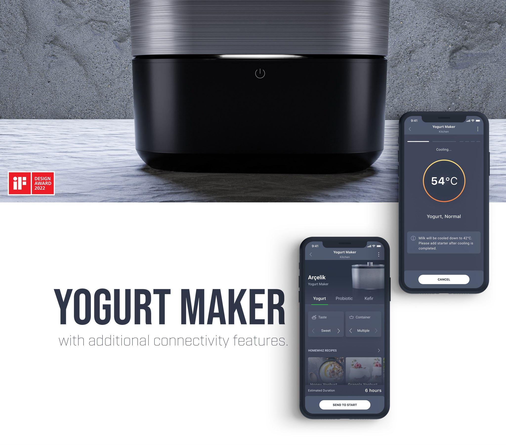
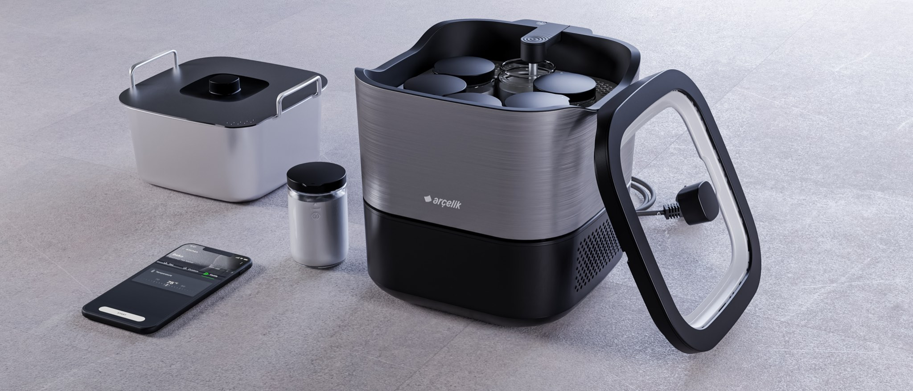
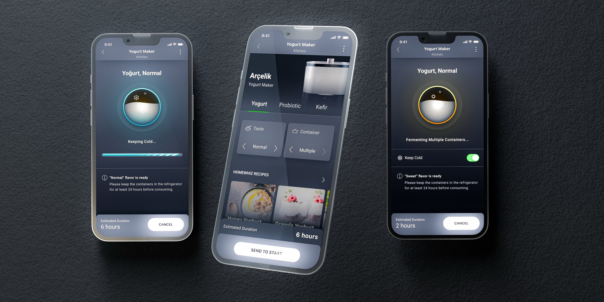

Beko · Connected kitchen appliance
Arçelik Gourmet Yogurt Maker
A yogurt maker with additional connectivity features — the device UI, the connectivity flows, and a step-by-step assisted guide inside Arçelik's HomeWhiz app.
iF Design Award 2022

Overview
A yogurt maker that talks to your phone
The Gourmet Yogurt Maker produces yogurt, probiotic yogurt and kefir, with selectable taste and container options. Beyond the appliance itself, it connects to HomeWhiz — Beko's connected-appliance app — so a program can be configured on the phone, sent to the device, and followed through fermentation and cooling.
My work covered the product's on-device UI and the HomeWhiz side of the experience: what the app needs to show, when it needs to guide, and how the two stay in step across a process that runs for hours.

Arçelik's product video for the finished machine.
Groundwork
Built on user habits studies, conducted across six countries, suported with additional user testing sessions
The product rested on a substantial research base: external concept test research and a competitive benchmark, an internal ideation workshop run against pre-defined personas, and a second round of yogurt consumption habits research covering six countries.
That work set the feature inventory and the constraints of the physical panel before a single screen was drawn — including a v.01 UI that went into the very first prototype and then into testing.
Contribution
My role
- Supported the user testing sessions — 10 participants, 45 minutes each — defining and validating the scenarios with the UX Research team.
- Evaluated the results with the PM, R&D and UX Research teams, and set the action plan that followed from them.
- Re-evaluated the UI into v.02 and prepared the technical documentation the next prototype needed.
- Defined the HomeWhiz connectivity flows and features against the agreed product feature set.
- Finalised the product and app flows for the next prototype and its round of user testing.

The full story
Three steps, from research to a finished app
The case study walks through the whole thing: consolidating the research and the earlier panel alternatives, rebuilding the flows around the user rather than the device, and designing the HomeWhiz experience — including the assisted guide that walks someone through their first batch.
View the full case study